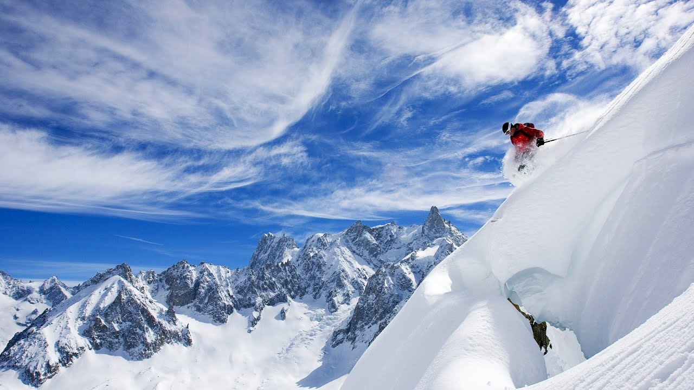
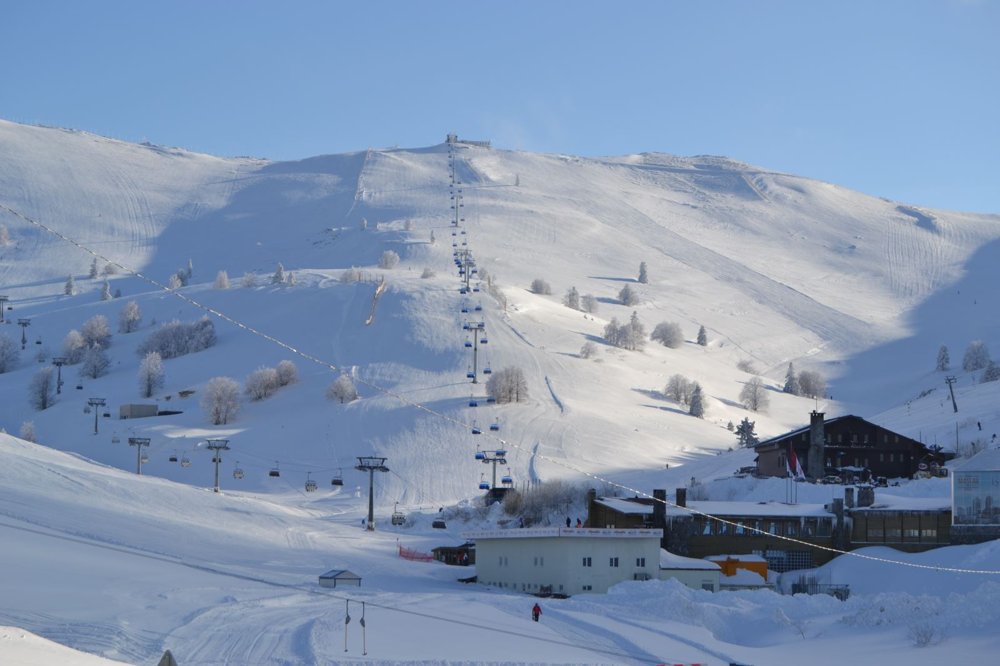

Bursa'nın güneyinde, 2.543 metre yüksekliğindeki Uludağ, kış sporları açısından Türkiye'nin en gözde merkezlerinden biridir ve aynı zamanda ülkenin en yüksek dağlarından biridir. Uludağ, eşsiz doğal güzellikleri, zengin flora ve fauna ile ülkemizin milli parklarından biridir ve 1961 yılında Milli Park ilan edilmiştir. Bu özellikleri sayesinde sadece kış turizmine değil, aynı zamanda yaz aylarında kampçılık, trekking ve günübirlik piknik gibi etkinliklere de olanak sağlamaktadır. Uludağ'ın dört mevsim turizme hizmet veren bir doğaya sahip olduğu söylenebilir. Uludağ Milli Parkı'nın en yüksek noktası Uludağ Tepe'dir ve yüksekliği 2543 metre olarak ölçülmüştür. Milli Park içinde bulunan diğer yükseltiler arasında Zirvetepe (2468 m), Kuşaklıkaya (2232 m), Çobankaya (1750 m) ve Bakacak Tepe (1743 m) yer alır. Sarıalan (1621 m), Kirazlıyayla (1505 m), Kadıyayla (1235 m) gibi yaylaları, Nilüfer Çayı'nın kollarından olan Dombay Çukuru Dere, Softadere ve Derinçay Dere gibi dereleri de bulunur.
Uludağ’da 1933 yılından bu yana kayak yapılmaktadır. Ülkemizin en önemli kış sporları ve kayak merkezi olan Uludağ’da karla kaplı gün sayısı yılda 150 günün üzerindedir. Dünyaca ünlü Uludağ kayak pistleri, Fatintepe ve Kuşakkaya tepelerinin üzerine kurulmuştur. Uludağ Kayak Merkezi, I. ve II. Gelişim Bölgeleri olmak üzere iki ayrı bölgeden oluşur. I. Gelişim Bölgesi yatırımlarını tamamlamış durumdadır. Birinci gelişim bölgesinde 17 kamu, 19 özel olmak üzere toplam 36 konaklama ve dinlenme tesisi mevcuttur. Toplam yatak kapasitesi 10.000 civarındadır. 1986 yılında turizm merkezi ilan edilen II. Gelişim Bölgesinde ise, 4 otel mevcuttur. Uludağ kayak merkezi, Alp ve Kuzey disiplini ile “Tur kayağı” ve “Helikopterli kayak” uygulamaları bakımından uygun coğrafya şartlarına sahiptir. Kayak dışında snowboard, big foot, buz pateni, kar motosikleti aktiviteleri ziyaretçilere sunulan alternatifleri oluşturur. Oteller bölgesinde 8 telesiyej, 7 teleski olmak üzere 15 mekanik tesis mevcuttur. 13 farklı pist hali hazırda hizmet vermeyi sürdürmektedir. Kayak merkezi Bursa’ya 36, İstanbul’a 150 kilometre mesafededir. Uludağ’ın ziyaretçilerine sunduğu olağanüstü güzelliklerden biri de teleferik ulaşımıdır. Bursa-Kadıyayla (1235 metre) arasında, Kadıyayla-Sarıalan (1621 m) arasında, toplam dört hat hizmet vermektedir. Her hatta 30 kişi taşıyan bir kabin çalışır. Teleferik adını verdiği semtten 20 dakikada bir kalkarak Kadıyayla’ya ulaşır. Burada kabin değiştirip, Sarıalan’a çıkan kabine binilir. Yolculuk yaklaşık 25 dakika sürmektedir. Sarıalan’dan Oteller Bölgesi’ne ulaşmak için 7 kilometrelik yolu minibüsle geçmek mümkündür.
Yazın ayrıca; Sarıalan’dan önemli bir kamp alanı olan Çobankaya’ya (1750 m) telesiyejle gidilebilir. Milli Park sahası içinde yaban domuzu, tilki, çakal, kurt, porsuk, yabani kedi ile hasancık veya diğer adı ağaç yedi uyuru, köstebek, sincap, soreks, sansar ve az miktarda ayı yaşamaktadır. Ayrıca Yeşiltarla’da bir Geyik Üretme Çiftliği vardır. Sakallı akbaba (Gypaetus Barbatus) ise Uludağ’da yaşayan endemik bir türdür. Türkiye’de yaşayan en büyük kelebek türü olan Apollo Kelebeği, muhteşem görüntüsü ve olağanüstü yapısıyla Uludağ’ın en önemli renklerinden biridir. Temmuz ve Ağustos aylarında Uludağ’ın binbir çeşit çiçekle süslü çayırlarında adeta dans eden benzersiz Apollo Kelebeği, zaman zaman 6 bin metre yükseklikte bile kendine yaşama imkânı bulabilen bir tür olarak bilinmektedir. 1961 yılında milli park ilan edilen ve 12 bin 762 hektarı kapsayan Uludağ Milli Parkı’nın yüzde 71’i orman, yüzde 28’i mera ve kayalık, yüzde 0,4’ü açık, yüzde 0,1’i sulak alan, yüzde 0,5’i ise yerleşim alanıdır. Türkiye’de ilk buzul devri izleri Uludağ’da görülmektedir. Uludağ’ın kuzeye bakan yamaçlarında buzullarca şekillendirilmiş oluşumlar ve ilginç görünümlü kaya kitleleri vardır. Yılanlıkaya, Cennetkaya, Çobankaya gibi şekiller bunların en tipik örnekleridir. Milli Park bünyesinde yüksek kesimlerde buzul gölleri de bulunmaktadır.
Kaynak: Bursa İl Kültür ve Turizm Müdürlüğü